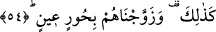
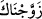
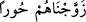

günü olur. Hak Sübhânehû ve Teâlâ bütün mü’minleri bir sofra başına oturtur ve her biri
birbirlerinin yüzlerine bakarlar.”
Bazıları şöyle demiştir: Hased ve kin ile birbirlerine sırt çevirmeyip, sevgi ve
muhabbetle karşılıklı yüzyüze oturmaktadırlar. Çünkü Allah Teâlâ daha baştan cennete
girdiklerinde cennet ehlinin gönüllerinden her türlü kin ve tasayı çıkarıp atmıştır. İşte bu
tarz karşılıklı oturmak Allah dostlarının hem dünyâda, hem de âhiretteki
niteliklerindendir. Ne mutlu onlara ki onlar henüz dünyâda iken cennettedirler.
54. Ayrıca onları, iri gözlü hûrîlerle de evlendirmişizdir.
“Ayrıca” durum şundan ibârettir “onları” böylece ödüllendirip “iri gözlü hûrîlerle
de evlendirmişizdir” “Müttakîleri beyaz yüzlü iri gözlü kadınlarla bir araya getiririz.”
Artık cennet ehli bazen kardeşlerinin ünsiyet ve dostlukları, bazen de iri gözlü hûrîlerle
oynaşma ve kaynaşma ile cennet nimetlerinden faydalanmaktadırlar. Yoksa hûrîlerle bir
nikâh akdi söz konusu değildir. Zaten bu mânâda tezvîc kelimesi bâ ile müteaddî olmaz.
Kur’ân’da şöyle gelmiştir: “Zeyd o kadından ilişiğini kesince biz onu sana
nikâhladık” (Ahzâb, 33/37) Maksad nikâh akdi olmadığı için, seni onunla eşleştirdik,
mânâsında “/zevvecnâke” buyrulmuştur. Yani sen tek bir fert idin, biz seni onunla
birleştirdik, onunla çift ve eş oldun demektir. Allah tek olan bu insanları böylece bir
erkek, bir dişi olarak eşleştirmiştir.
Müfredât kitabında şöyle denilmektedir: Kur’ân’da onları hûrîlerle nikâhladık, eş ve
çiftler yaptık, şeklinde “/zevvecnâhüm hûren” şeklinde bir ifâde gelmemiştir.
Kur’ân’da ve cennet ehli hakkında durumun farklı olması, cennette hûrîlerle olan bu
izdivâcın bilinen nikâhlar gibi olmadığını tenbîh içindir.
Müftî Sâdî şöyle demiştir: Sonra şu husus bilinmelidir. Cennette izdivâç ve eş
durumu vardır. Ancak bir nikâh akdi yoktur. Çünkü nikâhın getirdiği fayda, karşı cinsin
kişiye helâl olmasıdır. Oysa cennet teklif yurdu olmadığı için buna gerek yoktur. Orada
bir şeyin helal yahut haram kılınması diye bir şey söz konusu değildir.
Fakir (Bursevî) der ki: Buna şöyle bir îtirâz gelebilir: Allah Teâlâ cennette Havvâ
validemizin mehrini Hz. Âdem’in (a.s.) Peygamberimiz’e (s.a.) on kere salât ü selâm
getirmesi olarak tâyîn etmiştir. Nikâh akdi olmadan mehir olmaz. Ancak bu akdin bizce
bilinenden farklı bir akid olduğu düşünülürse olabilir. Burada mehir tâyîninde
Peygamberimiz’e (s.a.) salat ü selâm getirilmesinden maksad nikâh akdiyle izdivâcın
helâl olması değil, Peygamberimiz’e (s.a.) tâzîm ve onu tanıtma gayesine yöneliktir.
Yapılan işin adına mehir denilmiştir ki, bu durum Âdem ve Havvâ’nın evlâdlarında da
böyle devam edip gitsin. Zâhir olan Âdem ve Havvâ vâlidemiz arasında cennetteki
muâmelenin sadece karşılıklı bir ünsiyetten ibâret oluşudur. Dünyâda olduğu gibi